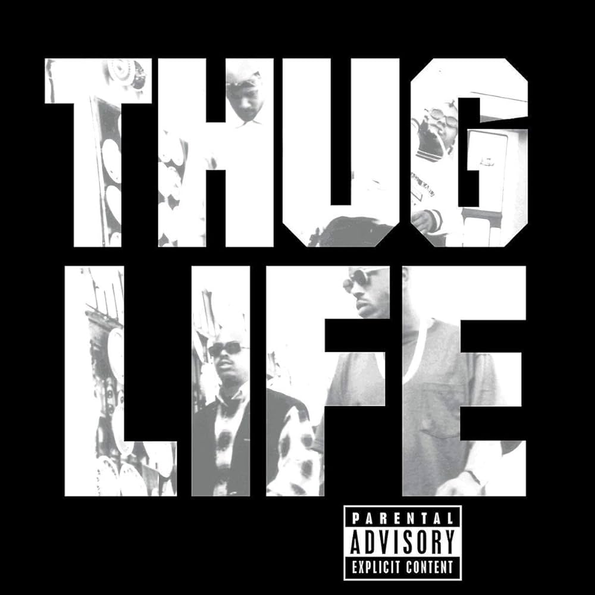

All Eyez On Me
1996

Greatest Hits
1998

Strictly 4 My N.I.G.G.A.Z...
1993

2Pacalypse Now
1991

Me Against The World
1995

The Don Killuminati: The 7 Day Theory
1996

R U Still Down? (Remember Me)
1997

Thug Life: Volume 1
1994
Tupac Shakur
Tupac Shakur (1971–1996) não foi apenas um rapper; ele foi um revolucionário cultural, ator e o porta-voz de uma geração que vivia entre a violência urbana e o sonho de justiça social. Nascido no Harlem, Nova York, ele foi batizado em homenagem a um revolucionário inca, carregando no nome o destino de quem desafiaria o sistema.
Herança de Luta
Sua identidade foi forjada na militância. Filho de Afeni Shakur, uma líder proeminente dos Panteras Negras, Tupac cresceu rodeado por discussões sobre direitos civis e resistência política. Essa base intelectual permitiu que ele escrevesse letras que alternavam entre a crueza da "vida de bandido" (Thug Life) e poesias profundas sobre a dor das mães solteiras e o racismo estrutural.
A Ascensão e a Dualidade
Tupac mudou-se para a Califórnia e explodiu no início dos anos 90. Sua carreira é marcada por uma dualidade fascinante.
O Ativista: Em músicas como "Keep Ya Head Up" e "Changes", ele pregava empatia e reforma social.
O Rebelde: Em meio a problemas judiciais e a famosa rivalidade East Coast vs. West Coast, ele adotou uma postura mais agressiva, visível no álbum "All Eyez on Me", o primeiro disco duplo de sucesso do hip-hop.
O Legado Imortal
Sua vida foi tragicamente interrompida em setembro de 1996, em um tiroteio em Las Vegas, quando ele tinha apenas 25 anos. O crime permanece um dos maiores mistérios da cultura pop.
Mesmo após sua morte, Tupac continua sendo uma figura quase messiânica. Ele vendeu mais de 75 milhões de discos, tornou-se o primeiro artista de hip-hop solo a entrar para o Rock and Roll Hall of Fame e suas letras são estudadas em universidades ao redor do mundo.
Tupac provou que era possível ser, ao mesmo tempo, um "vilão" para o sistema e um herói para o seu povo.
Sua contribuição técnica para o gênero é imensurável: ele elevou a complexidade das rimas e a velocidade do rap a níveis de competição esportiva.
Hoje, ele é reverenciado tanto pelos veteranos quanto pela nova geração como um dos maiores letristas que já segurou um microfone.
"Eu não estou dizendo que vou mudar o mundo, mas garanto que vou acender a faísca na mente de quem vai mudar."Tupac Shakur.